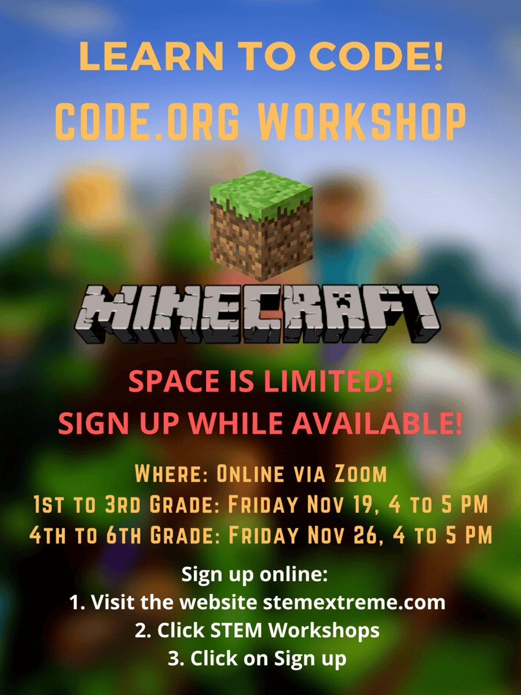

(Archive)Where it started
High School
Where it all started: Code.org & Scratch projects in 10th grade, then the iOS apps I taught myself to build after the IB exams, plus the flyers and wallpapers I designed for clubs and the community.
Through the Years
Programming Projects Code.org, Scratch & Java
All of these are small, and nearly all of them are from 10th grade. 11th is generally the busiest year of high school and mine was no exception: nine classes, IB internal assessments, and APs to sit at the end of it, so there was very little time left over for building things.
Then the IB exams finished, and that is when I found what I actually wanted to do. I taught myself iOS development, and my first app was Datapad: the Code.org Star Wars Datapad from 10th grade, finally a real app on the App Store. Back in 10th grade that was the dream, and I never thought it would actually happen. Al-Islam came later that summer, then Al-Quran and Al-Adhan a few months after that, in 12th grade.
Apps I Shipped in High School 11th & 12th grade
Five apps written and shipped to the App Store between junior year and graduation, two of which went on to win the Congressional App Challenge and the Swift Student Challenge.
View My Apple Developer Page↗Custom Flyers

Minecraft Workshop2021 Star Wars Workshop2022
Star Wars Workshop2022
 Code Combat Workshop2022
Code Combat Workshop2022
 CyberPatriot2023
CyberPatriot2023
 Girls Who Code2023
Girls Who Code2023
 Muslim Student Assoc.2023
Muslim Student Assoc.2023
 Blood Drive2024
Blood Drive2024
 Computer Science Classes2024
Computer Science Classes2024
 Environmental Science · Solar2024
Environmental Science · Solar2024
Custom Wallpapers
Academics Class of 2024
Graduated from Trabuco Hills High School on 30 May 2024 with the IB Diploma, nine AP exams, and dual-enrolment coursework at Saddleback College.
UC GPA is the University of California’s standardised GPA, calculated only from 10th and 11th grade a-g courses with a capped number of honours/AP bonus points. CSU GPA was 4.15. 330 credits attempted, 330 completed.
Extracurriculars 2020 – 2024
All four years
- Muslim Student Association: secretary in 10th grade, then president for 11th and 12th. Weekly Jumuʿah on campus; I began giving khuṭbahs in 10th grade and led the prayer.
- Weekend Islamic school: fiqh and ʿaqīdah, and learning to recite the Quran properly with tajwīd.
- Quran recitation: recording Minshawi-style recitations on my own channel, which is also where the tajwīd work behind Al-Quran started.
- Voice of learnsalah.com (2023): recorded the audio the site uses to teach people how to pray.
- CSF: active member across all four years, volunteering at events.
- Tennis, pickleball and ping pong: several times a week, mostly for the company.
By year
- 9th
JV tennis team: two hours a day, through a year of online school.
- 10th
Varsity tennis. Built my first real projects on code.org: Star Wars Datapad, a periodic table, a calculator, a wallpaper maker, and a games app with Wordle, Hangman and Checkers.
- 10th
Director of STEM Workshops for STEM Extreme: created and ran events teaching elementary schoolers to code, in person and online, and made the posters for each.
- 11th
Varsity tennis. Wrote Al-Islam and Datapad after AP and IB exams; see the apps above.
- 12th
Co-President of the CyberPatriot club.
- 12th
Helped create the ICOI Technology Committee and sat on the board; built the ICOI app. Shipped Al-Adhan and Al-Quran.
Awards & Honors
- 2022 · 10th
First Place, Orange County American Chemical Society first-year exam
Recognised at school and community level for academic excellence in chemistry.
- 2022 · 11th
IB Knowledgeable Award
Given at our first IB banquet for contribution to class discussion and overall achievement.
- 2023 · 11th
AP Scholar with Distinction
Average of at least 3.5 across all AP exams with 3 or higher on five or more. Ended with a 5 on six exams and a 4 on three.
- 2023 · 11th
Career Technical Education Award
For two years of computer science coursework.
- 2023 · 12th
Winner: Congressional App Challenge, Best Original App Idea
Won with Al-Islam, and awarded a Certificate of Congressional Recognition by U.S. Representative Young Kim. The Arabic Beginner Mode and Traveling Mode were singled out.
- 2023 · 12th
ICOI Certificate for App Development Achievement
For building and maintaining the ICOI app: prayer times, events and more.
- 2024 · 12th
Winner: Apple Swift Student Challenge
One of 350 winners out of thousands of high school and college students worldwide, won with Al-Quran. Attended WWDC 2024 days after graduating, met Tim Cook and saw Apple Park.
- 2024 · 12th
IB Best Performance at Banquet
For the speeches at the final senior IB banquet, including for two retiring IB teachers.
- 2024
OC Register: Valedictorians and top scholars, Class of 2024
Featured in the Orange County Register’s round-up for the graduating class.
WWDC 2024 Apple Park · June 2024
Winning the Swift Student Challenge with Al-Quran got me an invitation to Apple’s Worldwide Developers Conference in Cupertino. I flew up days after graduating, still technically a high schooler: walking Apple Park, meeting Tim Cook, and standing under the WWDC24 sign. Easily the highlight of the four years on this page.


Swift Student Challenge
Apple picks only a few hundred students worldwide out of tens of thousands of submissions. I won in 2024 for Al-Quran, written in my senior year, and got a personal congratulatory letter from Apple’s Worldwide Developer Relations team along with it.


Community Service
Islamic Center of Irvine · grades 9–12
Website content, organising Ramadan taraweeh prayers, running programmes like the coffee chats, and building their iOS app.
NHS · grades 11–12
Juniors and seniors only. Volunteered at events and organised my own at ICOI: the highest hour count in the chapter junior year at over 30, and around 50 by the end of senior year.
Work while still at school
-
Feb 2024 – Jan 20262 yrs · part-time
iOS App Development Teacher · STEM Heroes Academy
After the ICOI app shipped I was asked to help build out the STEM academy at the Muslim Village, a new ICOI programme. It was robotics only; I proposed an iOS course, and that proposal is what expanded the curriculum.
- Designed and proposed the course, covering Swift, Swift Playgrounds and SwiftUI for children aged 8–14.
- Wrote the curriculum: Swift syntax, optionals, structs and classes, then UI with stacks, event-driven programming with gestures, and animations.
- Contributed to the academy’s growth as its youngest instructor, at 17.
Started in my senior year of high school and carried on through both years of college, finishing in January 2026.
Muslim Village, ICOI · Dr Yasser Shoukry Ran into college -
Summer 20219th → 10th
Tennis Court Supervisor
My coach offered me the job after 9th grade. Every weekend overseeing the local community courts: keeping them clean, in good condition, and players to the rules. First job, and the first time I was responsible for something on my own.
Coach Mike Kovar